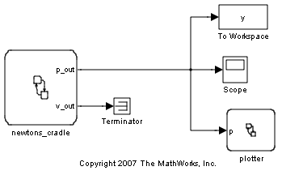
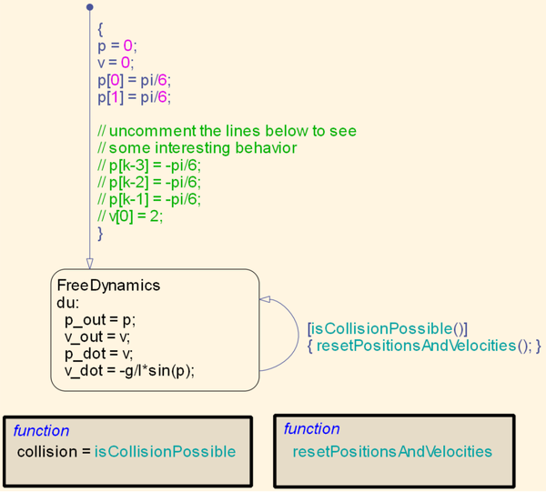
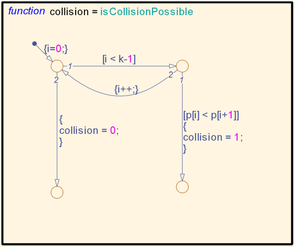
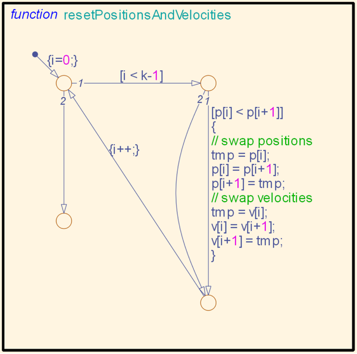
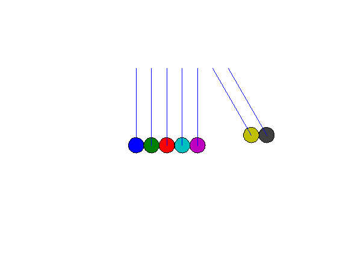

Modeling Newton's Cradle
The popular toy called "Netwon's cradle" consists of a row of (usually) seven identical balls which are hung from a common height. At rest they are arranged such that they just touch each other. One or more balls from one end are then raised from their rest position and released.
An interesting consequence of elastic collisions between the balls is that the balls which are released seem to come to a stop and an equal number of balls from the other end get released (with almost the same energy as the incoming balls). The balls in the middle do not seem to move much at all although they are responsible for transferring momentum from one end to another.
This model uses a simple elastic collision model to describe the interactions between the balls. The Stateflow® chart uses local variables to to depict the continuous states of the system, namely the position p and the velocity v. Note that both these local variables are defined to have "Update method" as "continuous". This means that you can refer to their derivatives as p_dot and v_dot respectively. Since the nominal dynamics of all the balls is identical, we can use vector assignments to describe them en-masse as:
p_dot = v; v_dot = -g/l*sin(p);
Note that p_dot and v_dot are not chart local variables. They are automatically created because p and v are defined to be "continuous".
We use a simple for-loop to detect for collisions between balls. In a one-dimensional setting, we only need to bother with collisions between successive balls. Therefore,we have a single for loop.
The response to a collision is also expressed simply. Since we treat a collision as a perfectly elastic instantaneous collision, we simply exchange the positions and velocities of the balls which are involved in the collision.
Simulating this model brings up a very simple GUI which shows the motion of the balls.
